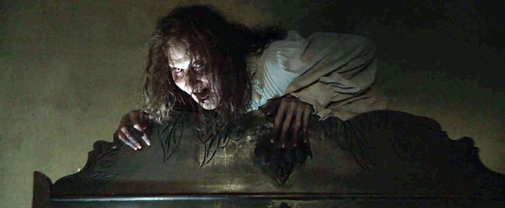

| Nombre | Imagen | Descripción |
|---|---|---|
| Bathseeba |  | Era una mujer del siglo XIX acusada de brujería y de sacrificar a su hijo en honor a Satanás. Su espíritu maligno atormenta a la familia Perron en su casa en Harrisville, Rhode Island, mostrando una presencia aterradora y violenta. |
| Valak | Valak es la entidad demoníaca principal en El Conjuro 2 y La Monja. Se manifiesta como una monja de apariencia terrorífica, con piel pálida, ojos amarillos y un hábito oscuro. Es un demonio de alto rango que busca sembrar el miedo y la desesperación, desafiando la fe de quienes intentan enfrentarlo. | |
| Isla | Es la líder de un culto satánico que practica magia oscura y rituales de invocación demoníaca. Su presencia está vinculada a los artefactos malditos en la colección de los Warren, ya que sus prácticas dejaron una huella de maldad en varios objetos. |